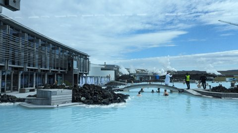
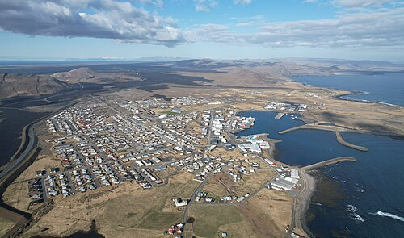
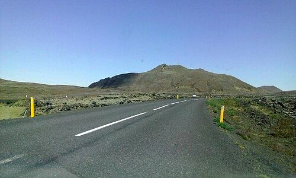

This map shows 4 of the most-searched sights in Grindavík as photo spots, ranked by how often people search for them: Blue Lagoon, Grindavík town, Þorbjörn mountain and Svartsengi Power Stn lead the list. Every spot has a pin on the subject and a phone icon showing where to stand, with tips for shooting it on your phone: which lens to use, how to frame it, a settings tip and the best time of day. Directions and Navigate buttons take you to the standing point on foot or by public transport. 3 spots are free to view; the full map is for members.
The 3 free photo spots
1Blue Lagoon

The Blue Lagoon is a geothermal spa set in a black lava field on the Reykjanes Peninsula, in front of Mount Þorbjörn. It is man-made. The water is a by-product of the nearby Svartsengi geothermal power station, and its milky blue colour comes from the silica in it. The soft white silica mud on the bottom adds to the pale look. That colour against dark volcanic rock is what makes it so easy to photograph, even on a phone. Steam drifting over the surface adds mood and depth to a shot. Bathing facilities opened in 1987, and the lagoon is now one of the most visited attractions in Iceland. It is about 20 km from Keflavík International Airport. The area has also seen volcanic activity since late 2023. Lava reached the site in November 2024 and destroyed the car park, but protective barriers kept the lagoon itself intact, and the site has closed and reopened several times since. For photos, keep the dark lava, the blue water and the sky in the frame together, and use the steam as a soft foreground. Keep your phone dry and wipe the lens often, because steam and splashes leave marks. Check the official site for current opening and access before you go.
Where it is: The Blue Lagoon sits in a lava field on the Reykjanes Peninsula, about 5 km from Grindavík, in front of Mount Þorbjörn and beside the Svartsengi geothermal power station.
Shooting it on your phone
Lens: Start with the ultra-wide (0.5x) to take in the whole lagoon, the lava and the mountain. Switch to the default lens (1x) for a cleaner, more natural look. Use telephoto (2x-5x, depending on your phone) to pick out people in the water, steam patterns or the edge of the lava.
Where to stand: Stand about 10 m south of the numbered pin, at the phone icon on the map, and face north. Stay on the paths and in the areas open to visitors.
Framing: Turn on gridlines and place the horizon on the upper third line so the milky water fills most of the frame. Include a strip of dark lava in the foreground for contrast. Wait for gaps in the steam so the colour shows through.
Settings tip: Tap on the water to focus, then drag the exposure slider down a little so the pale blue keeps its colour and the white steam does not wash out. Wipe the lens with a dry cloth before each shot, as steam leaves a haze on it.
Best time: Soft, even light on an overcast day suits the milky blue. Low sun early or late in the day adds warmth and shadows on the lava. In the dark months, use night mode and hold the phone steady against a rail or wall.
2Grindavík

Grindavík is a working fishing town on the far south-western tip of the Reykjanes Peninsula, and it is one of the few places on this coast with a proper harbour. That is the main reason to photograph it. You get low buildings, boats and working quays set against an old lava field and open sky, so the picture says something about life here. The town stands on an old lava field, and the harbour, called Hópið, only became the town's fishing base in 1939, when locals dug a channel through a reef to link it to the sea. A lighthouse built in 1928 stands on the southern tip of the nearby peninsula, and it makes a good small detail if you can see it. The Blue Lagoon is about 5 kilometres away. Volcanic activity since late 2023 has affected the town, and parts of it have been evacuated at different times, so the situation on the ground may differ from older photos. Keep to any signs and closures, and do not cross barriers for a better angle. Frame the roofs and harbour with the wide sky around them, and include the lava ground if it is visible. Keep any people or private property incidental rather than the main subject.
Where it is: Grindavík is a fishing town on the far south-western Reykjanes Peninsula in Iceland's Southern Peninsula district, near the hill Þorbjörn.
Shooting it on your phone
Lens: Start with the default lens (1x) for the town as you see it. Switch to ultra-wide (0.5x) if you want the sky and the surrounding landscape in the frame, and use telephoto (2x-5x, depending on your phone) to pick out the harbour, boats or lighthouse from a distance.
Where to stand: Stand on Grindavíkurhöfn (harbour waterfront). The working harbour waterfront of the fishing town, with the boats and harbour buildings in the foreground.
Framing: Turn on gridlines and put the horizon on the upper or lower third line. If the lava ground is visible, keep a strip of it in the foreground to give a sense of place, and let the rooftops and any boats sit in the middle band. If you can see the lighthouse, include it as a small detail.
Settings tip: Tap on the buildings to set focus, then drag the exposure slider down a little so the sky keeps its colour and any lava ground does not turn muddy. Try a panorama if you want the full sweep of the town, and hold the phone steady and level as you turn.
Best time: Early morning or late afternoon usually gives softer, lower light on the buildings and the landscape. On bright days around midday the sky can look washed out.
3Þorbjörn

Þorbjörn is a 243 m volcanic mountain right beside Grindavík, on the Reykjanes peninsula. It is not tall, but it stands alone beside the town and the Svartsengi area, so it fills a phone frame easily and reads clearly against the sky. It grew from eruptions under a glacier during a cold spell in the Pleistocene, and a long split runs across the top, forming a small canyon up to 80 m deep. The small canyon in the mountain is called Þjófagjá, or Thieves' Canyon, after an old story of bandits caught by a farmer's son. There is also a jeep track up the slope, built by the U.S. Army during World War II, and radio and television masts now stand on the summit. From the top you can see the Blue Lagoon. The easiest picture for most visitors is the approach view from Grindavíkurvegur, on the stretch heading into town from the Blue Lagoon side, where the mountain rises beside the road. Take it as a wide, simple frame: road in the foreground, mountain as the main shape, sky above. If you are fit and the path is open, the summit gives a second kind of photo looking down over the town, the Atlantic and the Blue Lagoon, with the radio buildings in the foreground. The mountain has seen ground movement and earthquakes since 2020, so check current access and closure notices before heading up.
Where it is: Þorbjörn sits just outside Grindavík on the Reykjanes peninsula, between the town and the Svartsengi power station and Blue Lagoon area. Road 43 runs on its eastern side, and route 426 curves round its western side.
Shooting it on your phone
Lens: Start with the default lens (1x) to show the road, the mountain and the sky together. Use the ultra-wide (0.5x) only if you want a lot of foreground, as it makes the mountain look smaller. The telephoto (2x-5x, depending on your phone) is useful for picking out the summit buildings and the ridge line.
Where to stand: Stand on Grindavíkurvegur (stretch heading into Grindavík from the Blue Lagoon side, mountain on the left). Þorbjörn rising beside the road with the approach to Grindavík in view. On the stretch heading into Grindavík from the Blue Lagoon side. Face north-west toward the mountain, and the photo shows Þorbjörn rising beside the road. Do not stand in the road: use a safe verge or pull-in, and keep away from moving traffic.
Framing: Turn on the gridlines and place the mountain on one third of the frame, with the road leading the eye into the picture. Keep the horizon level, as the mountain's slopes look best with a straight skyline. If you go up the mountain instead, shoot back over Grindavík and the Atlantic with the summit's radio buildings in the foreground.
Settings tip: Tap on the mountain's slope to set focus, then drag the exposure slider down a little if the sky is bright, so the slope keeps its colour and detail. Take a few shots, as passing cars can ruin a frame.
Best time: Choose a time when the sun is low and the mountain's slopes show relief; the early morning or the hours before sunset are usually kinder than flat midday light.
1 more spots for members
These spots are on the map as grey numbered pins. Where to stand, the phone tips, photos and directions for them come with Explorer membership.
- 4Svartsengi Power Station · members
Get every spot with Explorer membership
Explorer opens every spot on every map in the library: where to stand, how to frame it on your phone and how to get there, plus the Xdatrys Maps app with maps saved on your phone for use without signal. $9.99 a month or $59.99 a year; cancel any time.
Join Explorer Compare free and Explorer
Not ready to join?
Get Pocket Lens, our free daily smartphone travel photography newsletter.
Free, and you can unsubscribe at any time. If the form does not show, sign up on our newsletter page.
Questions
What are the top photo spots in Grindavík?
The first three on this map are Blue Lagoon, Grindavík town and Þorbjörn mountain. They are ranked by how often people search for them. The full map has 4.
Where should I stand to photograph the Blue Lagoon?
Stand about 10 m south of the Blue Lagoon, at the phone icon on the map, and face north. Start with the ultra-wide (0.5x) to take in the whole lagoon, the lava and the mountain.
When is the best time to photograph Grindavík town?
Early morning or late afternoon usually gives softer, lower light on the buildings and the landscape. On bright days around midday the sky can look washed out.
How do I get to Þorbjörn mountain?
No station or stop is listed for this spot, and no public transport is listed, so it is easiest reached by road.
Credits
Map data © OpenStreetMap contributors (ODbL); base map built with Protomaps from OpenStreetMap data. Photos from Wikimedia Commons, credited under each photo with their licence. Background reading for the free spots: Blue Lagoon (geothermal spa), Grindavík, Þorbjörn (mountain) (Wikipedia, CC BY-SA). Access rules and opening times change: check before you go.